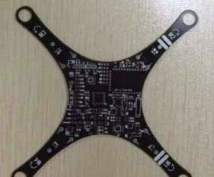
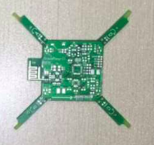
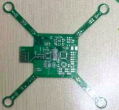
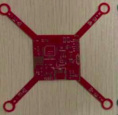
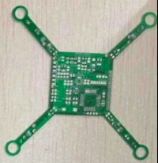
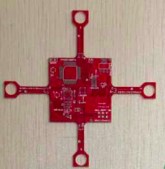
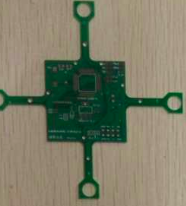

在收集了很多用户反馈的问题之后，推出的第一个版本。
添加高精度气压计MS5611，精度可以在10cm以内，可以用来实现室内自主悬停（Z轴方向），删除磁力计HMC5883L
电机有716型号换成720型号，桨叶由原来的4.6cm桨叶换成7.5cm桨叶，动力更强劲
软件算法实现完全锁尾，解决航向角漂移问题
第一次公开付费内测
尝试采用了2.0mm的板厚，并且第一次找工厂贴片
nieyong参与产品设计，飞行器外形采用双曲线造型
nieyong和CamelGo因为四轴飞行器认识
终于能够飞起来了！！！
在能够飞起来之前一共开过4次板子，将这些批次统一叫做Crazepony-I系列，以后的就叫做Crazepony-II。
   